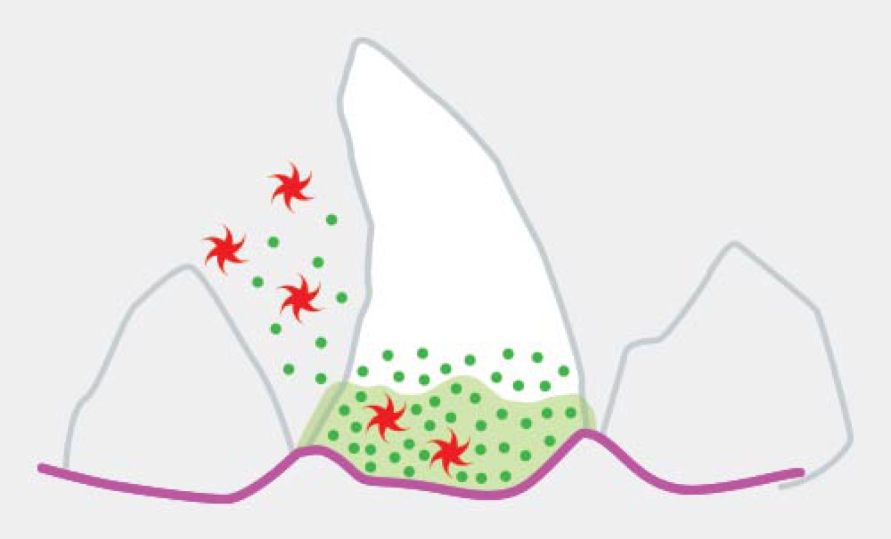
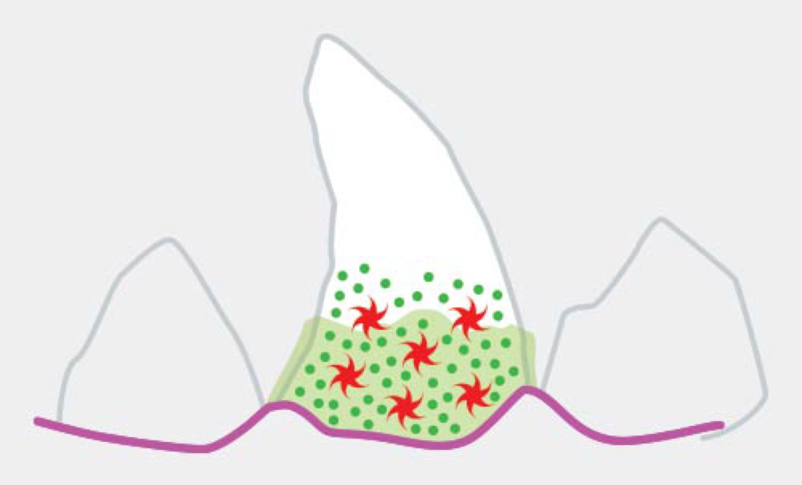
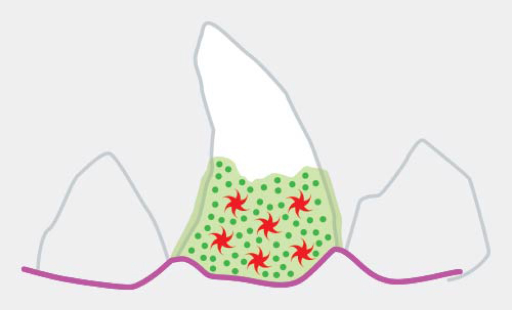
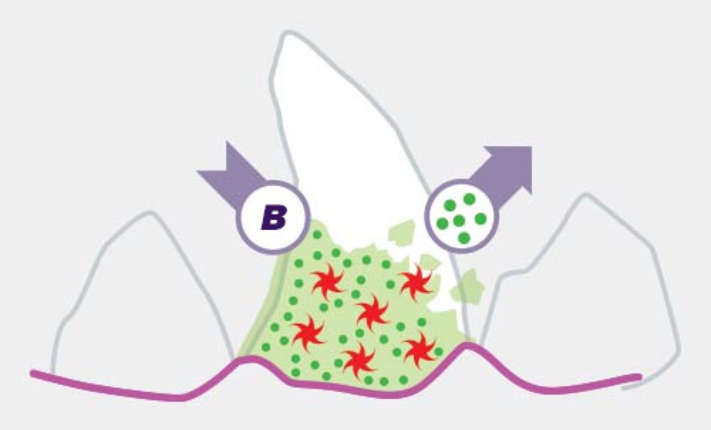
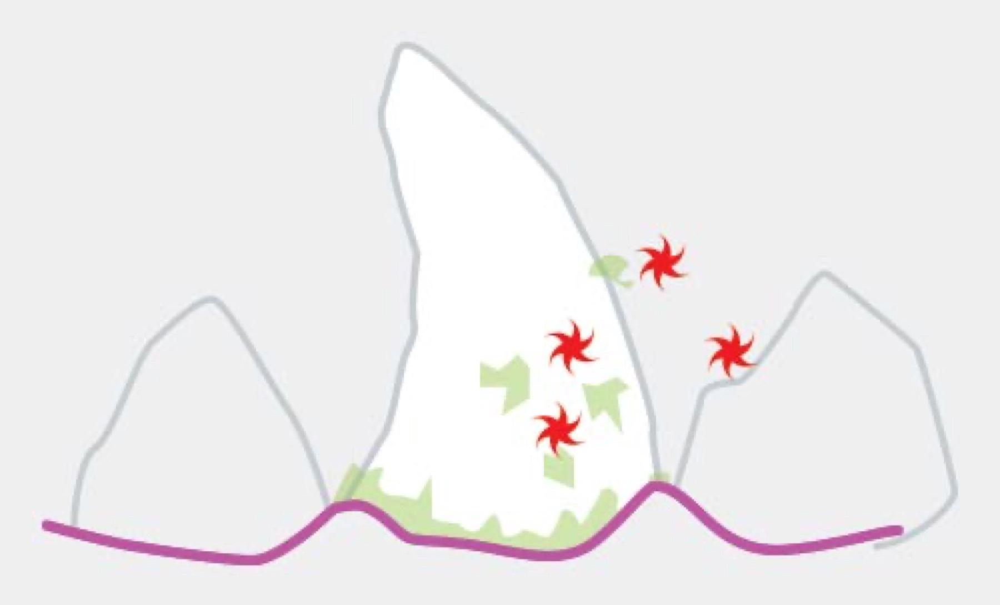

How it works
Without consistent
home care, dental disease
can develop.
-

01 Plaque accumulates
-

02 Calculus develops
-

03 Disease progresses
Biotrate® Technology
How VETRADENT® patented Biotrate® Technology works
The active ingredients in VETRADENT® bind to magnesium, calcium and iron found in the pet’s saliva, making them unavailable to calcify plaque into tartar.

